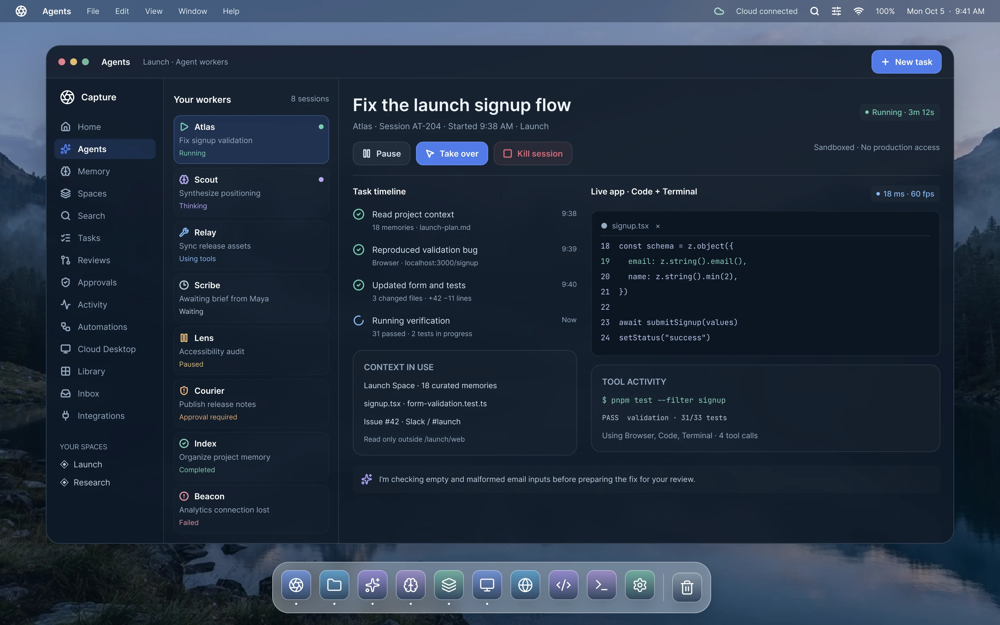

An agent with the context to actually help.
Capture's agent works within the information you've collected for a project. Instead of generic boilerplate answers, you get precise execution informed by your specific notes, documents, and references.

Arrange
Group related information and create useful structure automatically. As research grows from 5 to 50 documents, the agent maintains clusters and clears inbox clutter.
Understand
Retrieve specific facts, identify cross-file relationships, and flag contradictions between documents (such as differing specs across PRDs and meeting notes).
Create
Generate high-leverage outputs from your Space: executive summaries, technical RFCs, execution checklists, and synthetic reports with clickable source citations.
Autonomous Analysis & Conflict Resolution
1. Created Logical Groups: Organized 14 items into System Architecture, Market Research, and Implementation Milestones.
2. Identified Related Documents: Linked MCP Protocol RFC.md directly with api_streaming_notes.pdf.
3. Flagged Contradictory Details: Document A lists server timeout as 30s; Architecture slide lists 10s. Requires resolution before release.
4. Highlighted Missing Information: No rollback plan or database schema migration script captured for milestone 2.
5. Suggested Next Actions: Drafted a 1-page migration RFC outline ready for review.
AI should be useful without
taking control away from you.
We reject the autonomous runaway agent paradigm. Capture is designed for human mastery and total accountability.
Reversible actions
Any automated rearrangement, tagging or file generation can be rolled back with a single undo command.
Visible execution history
Every tool call, semantic query, and file manipulation is clearly timestamped in an accessible audit trail.
Source citations
Every synthesized summary and factual assertion links directly back to the exact passage or document in the Space.
Human approval
Consequential actions—such as modifying primary documents or triggering external calls—require explicit confirmation.
Space-level context boundaries
Context is strictly sandboxed. The agent working on your private health Space has zero access to your corporate Space.
Deterministic fallbacks
Standard keyword search and manual navigation are always available if you prefer direct tactile file interaction.
Experience context-grounded AI
Apply for the private beta and test the Space agent with your projects.